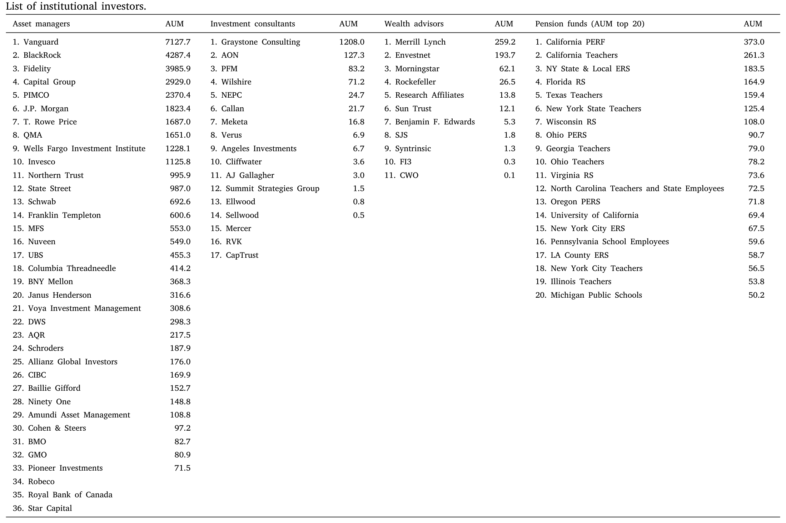
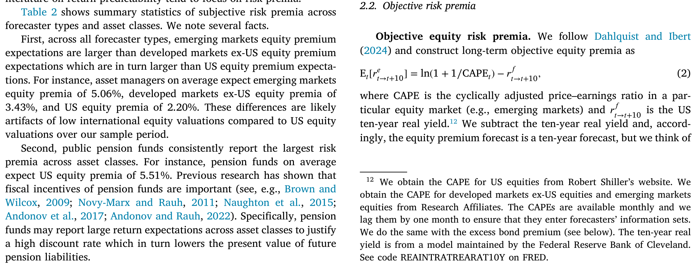
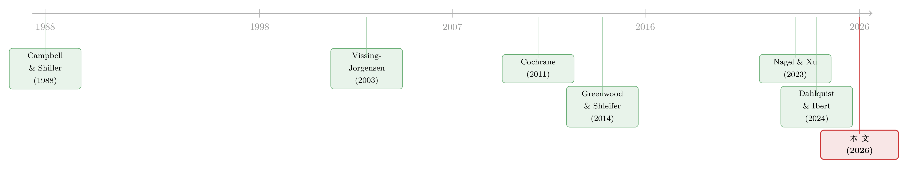

机构到底信什么？——把「预期」拆成时间与横截面两条轴
本文读的是 Dahlquist and Ibert (2026, Journal of Financial Economics)：资管、投顾、财富顾问、公共养老金与专业预测者的主观风险溢价，在时间序列上几乎与「客观的、逆周期的」风险溢价一比一同步——看上去很「理性」；但在横截面上，机构之间的分歧反而比时间上的波动更大。而这一大块分歧，最终被追溯到一件事：他们对长期市盈率到底会不会均值回归，意见完全不同。
1 一个老问题：到底谁是对的？
先抛一个让无数人头疼的矛盾。
标准的理性预期资产定价模型告诉我们，预期收益应当是逆周期 (countercyclical) 的——衰退里人们害怕、要求的风险补偿高，预期收益就高；扩张里人们乐观、要求的补偿低，预期收益就低（习惯形成模型的经典叙述，见 Campbell and Cochrane, 1999）。可问题是，每当有人真的拿着问卷去问散户「你觉得未来股市能涨多少」，得到的答案常常恰好相反：市场涨到天上、估值最高的时候，他们最乐观；跌到谷底、最该贪婪的时候，他们最悲观（Vissing-Jorgensen, 2003；Greenwood and Shleifer, 2014）。
于是过去十几年里长出了一大片「行为金融」的文献：既然真实的预期是顺周期 (procyclical) 的，那价格里装的可能根本不是逆周期的折现率，而是被情绪推着走的、对现金流的非理性外推。
这套故事讲得很漂亮。但它有一个不大不小的软肋——它问的几乎全是散户。
而价格，说到底反映的是财富加权后的预期。今天的金融市场里，最大的那一批钱不在散户手里，而在资管公司、投顾、养老金这些机构手里。它们的预期会通过资产配置建议、通过资本市场假设 (capital market assumptions, CMAs) 流向客户，再传导到价格上（Andonov and Rauh, 2022；Dahlquist and Ibert, 2024）。
所以一个绕不开的问题是：机构到底信什么？ 它们的预期，是像散户那样顺周期、追涨杀跌，还是像模型说的那样逆周期、低买高卖？
这篇论文，就是冲着这个问题去的。
2 第一步：把「主观」和「客观」放在一起回归
作者干的第一件事，是把一大堆机构和专业预测者的长期（约十年）风险溢价预期收集起来，覆盖五类资产：美股、发达市场（除美国）股票、新兴市场股票、现金，以及高收益公司债。预测者则分成资管 (asset managers)、投顾 (investment consultants)、财富顾问 (wealth advisors)、公共养老金，以及来自 Livingston 调查和专业预测者调查 (Survey of Professional Forecasters, SPF) 的专业预测者。
接着，一个自然的问题是：拿什么当「标尺」去衡量这些主观预期是不是理性？作者的做法是构造一组客观风险溢价 (objective risk premium)——都用经过时间检验、几乎不需要估参数、且实时可得的简单模型：
- 股票：用 Shiller 的周期调整市盈率 (cyclically adjusted price–earnings ratio, CAPE) 加 Campbell–Shiller 现值模型；
- 现金：取无套利期限结构模型给出的期限溢价的负值（Kim and Wright, 2005）；
- 公司债：用「超额债券溢价」(excess bond premium, Gilchrist and Zakrajšek, 2012)。
这一步的讲究在于「实时可得」四个字——它堵住了一个常见的批评：你用的客观基准，是不是事后诸葛亮、用了预测者当时根本拿不到的信息？不是。这些指标当时就摆在桌上。
有了标尺，核心回归就简单了：
这个式子的解读非常干净（Gabaix, 2019 也是这么读的）：b < 1 是反应不足 (underreaction)，b = 1 是主观预期与客观基准一比一同步、可以称之为「理性」，b > 1 则是反应过度 (overreaction)。
结果如何？在按资产类别、按预测者类型跑出的 23 个回归里，所有斜率都为正，且普遍接近 1；只有 1 个检验能拒绝 b = 1——也就是说，22/23 的检验里无法拒绝「一比一」。而且这些检验是有功效的：在 19/23 个检验里能在 5% 水平上拒绝 b = 0（即拒绝「主观溢价不随周期变化」这一经济上有意思的备择假设）。
如果再用各机构的可支配管理规模 (AUM) 加权——让大钱更说话——美股的斜率是 1.06，发达市场（除美国）1.03，新兴市场 0.86，现金 0.66，信用 1.61。统统显著异于零、却不显著异于一。
换句话说，在时间维度上，机构看起来相当「理性」：客观溢价在衰退里飙升，它们的主观溢价也跟着飙升。这跟散户那套顺周期的故事，是反着的。
（顺带一提，关于「主观预期里到底藏没藏着外推」的细致拆解，可参见《嘴上说的预期，藏不住手上的外推》。）
3 反转：时间上很「乖」，横截面上却吵翻天
故事到这里，似乎可以收尾了：机构理性，散户情绪化，皆大欢喜。
但真正关键的一步在于——作者没有停在时间序列，而是把同一笔数据横过来切。
于是反转出现了：尽管主观股票溢价在时间上波动很大，它们在机构横截面上的分歧却更大。 这个分歧不是噪声、不是临时拍脑袋，而是持续的——某家机构今年比别人乐观，明年大概率还比别人乐观。
量级有多悬殊？在资管对美股的主观溢价里，机构固定效应能解释 81% 的方差，而时间（年-月）固定效应只解释 13%。也就是说，「你是哪家机构」远比「现在是哪一年」更能决定你报出来的数字。

Table 1
有意思的是，这种「机构身份主导」的现象在股票上最强，在现金和信用上要弱得多。这其实说得通：固定收益的起息收益率 (starting yield) 本身就是预期收益的一个不错的近似，留给大家「各执一词」的空间就小。分歧最大的地方，恰恰是最难锚定的地方。

Table 2: shows summary statistics of subjective risk premia across
而且这种分歧还会跨资产类别传染：一家对美股悲观的机构，往往对其他资产类别也悲观。所有资产类别「平均预期收益」之间的两两相关都显著为正。一个对经济增长前景乐观的机构，会同时预期更高的股票收益和更高的信用收益——宏观预期成了搭在各资产类别底下的共同积木，于是横截面上的分歧自然会沿着资产类别一路蔓延。
到这一步，问题就被逼到了墙角：这么大、这么持久、还会跨资产传染的分歧，到底是从哪儿冒出来的？
4 核心：分歧的源头，是「市盈率会不会回归」
这才是全文真正的落点。
作者去翻了机构发布预期时随附的白皮书和报告，发现绝大多数机构都明确采用一种「积木式」(building-block) 方法来形成股票预期，把预期收益拆成四块（这正是 Ferreira and Santa-Clara, 2011；Rangvid, 2017 那条「化整为零」的思路）：
$$ F[r^e] \;=\; \underbrace{dp}_{} \;+\; \underbrace{g}_{} \;+\; \underbrace{\pi}_{} \;+\; \underbrace{\Delta pe}_{} $$
即：预期的股息-价格比 (dividend–price ratio, dp)、实际盈利增长率 (g)、通胀率 (π)，以及市盈率的百分比变化 (Δpe)。前三块刻画的是「持有期内的现金流」，最后一块刻画的是「持有期末估值水平相对今天的变化」。
于是作者新收集了这些积木本身的预期数据，做了一次方差分解。答案干净得惊人：
- 70% 的横截面分歧，来自对市盈率变化
Δpe的预期不同； - 25% 来自股息-价格比与盈利增长这一组合的现金流预期；
- 仅 5% 来自通胀预期的差异。
也就是说，机构们在「未来十年通胀几何」上几乎没什么可吵的，在「这期间能分多少红、盈利涨多快」上也只是小吵，真正吵翻天的，是十年之后市盈率会落在哪里。而且，Δpe 不仅主导横截面分歧，也主导了股票预期的时间序列变动。
那 Δpe 的分歧，本质又是什么？是对长期市盈率会不会均值回归 (mean reversion) 的根本分歧。
一个特别生动的例子：2021 年底，美国 CAPE 高达 38.3，相对历史是极高的位置。最悲观的那家机构预期 CAPE 会均值回归到 25 附近；而更乐观的机构则认为，38.3 本身就是对未来 CAPE 的最佳预测——也就是说，他们相信市盈率更像一个随机游走 (random walk)。作为参照，CAPE 在样本期内的均值是 28，自 1881 年以来的历史均值约为 17。
这正是学术界与业界一道有趣的裂缝。学术上预测股票收益时，通常把估值比率建模成带（近似）单位根的过程（Cochrane, 2008；Campbell, 2008）——即默认它不怎么回归。而业界机构则更愿意把自己对长期市盈率的主观先验塞进预测里：有人信回归，有人信随机游走，分歧由此而生。
把这一点想透，前面所有现象就串起来了：因为「信不信回归」是一种关于世界的根本观点，它既不会随某一年的行情轻易改变（所以分歧持久），也会同时影响一个人对所有风险资产的看法（所以分歧跨资产传染）。横截面上那 81% 的机构固定效应，说到底，装的就是这条「世界观」上的裂缝。
这种「同一个数据，时间上像 A、横截面上像 B」的反差，本身就提醒我们：把异质信念塞进资产定价时，不能只盯着时间序列的均值。关于信念分歧如何直接进入定价，可参见《你卖出时，谁还在场？——把「需求分歧」写进资产定价》。
5 顺周期还是逆周期？一桩悬案的部分了结
值得停下来说一句它对既有争议的含义。
前面提到，散户调查给出的是顺周期预期，由此催生了庞大的行为金融文献。这篇论文等于是说：至少对机构而言，主观股票溢价是逆周期的，和理性预期框架一致。
它和最接近的对手——Nagel and Xu (2023)——之间还有一段直接对话。后者研究个人投资者与专业预测者的主观溢价，结论偏向「无周期性 (acyclical)」。但作者指出，两边研究的预测者群体、预测期限、样本期都不一样；而对于双方共用的那一个群体（Livingston 调查），两篇论文其实都得到了逆周期的一致结论。这种「把差异归因到样本而非现象本身」的处理，是相当诚实的。
6 文献脉络
把这条线捋一捋，会看得更清楚。
最上游是估值与预期收益的现值框架：Campbell and Shiller (1988) 奠定了「价格、盈利与预期股息」的分解，也是后来 CAPE 现值模型的根。中游分两支：一支是 Cochrane (2011) 在「贴现率」主席演讲里把「预期收益时变」推到资产定价的中心位置（中文梳理见《贴现率：资产定价的中心议题》）；另一支则是用问卷直接量预期的实证传统——Vissing-Jorgensen (2003)、Greenwood and Shleifer (2014) 记录了散户的顺周期预期，把「主观 ≠ 客观」的张力摆上了台面。

再往下，焦点从散户转向机构与专业预测者：Nagel and Xu (2023) 系统刻画了主观溢价的动态；Dahlquist and Ibert (2024) 发现大型资管的美股与期限溢价预期在时间序列上与客观基准一比一同步。本文 (2026) 站的位置，是把这条时间序列结论跨资产类别、跨机构类型地统一起来，再补上最关键的一块——把横截面分歧一路追溯到「长期市盈率是否均值回归」。
7 评论与延伸（Q&A + 研究方向）
(a) 几个可能的疑问
Q：客观风险溢价是作者自己造的，会不会「自证预言」——基准选得巧，主观才显得理性？
这是最该担心的点，作者也防了一手。三个客观基准（CAPE 现值、期限溢价负值、超额债券溢价）都是文献里成名已久、实时可得、几乎不用估参数的「老模型」，而非为本文专门挑选或现场拟合的。它们的共同点是逆周期、会在衰退里飙升。当然，换一组同样逆周期的基准，
b≈1大概率仍成立——所以这个结论的精神是「主观溢价是逆周期的」，而非「恰好等于某个特定模型」。
Q：22/23 个检验无法拒绝 b=1，会不会只是样本太短、功效不够，所以「拒绝不了」而已？
作者特意做了功效检验来回应：在 19/23 个检验里能在 5% 水平上拒绝
b=0。也就是说，数据有能力区分「随周期动」与「不随周期动」，却没能力把斜率从 1 上拉开——这比单纯「拒绝不了」要强得多。
Q：这和「过度反应/外推」的行为金融叙事冲突吗？
不完全冲突，而是把战场换了维度。在时间序列上，机构看起来不外推、不过度反应（
b≈1）。但在横截面上仍有巨大且持久的分歧——只不过这种分歧不是「追涨杀跌」式的情绪，而是对长期估值是否回归的世界观差异。两件事可以并存。（关于团队如何驯服信念里的过度反应，可参见《三个臭皮匠，反而没那么容易上头？》。）
Q：机构嘴上说的预期，真的会影响它们的行动和价格吗？还是只是「说说而已」？
这是作者坦承的开放问题。养老金受管制，但 Andonov and Rauh (2022) 有证据表明它们会按预期行动；投顾的 CMAs 直接服务于客户的资产配置决策；资管的预期也会通过 CMA 流向客户。作者本身不研究组合选择，只能说「价格大概率反映了逆周期的风险溢价预期」，至于究竟谁的预期被价格吸收，留给了后续研究。
Q：为什么现金和信用上「机构身份」的解释力远不如股票？
因为固定收益的起息收益率本身就是预期收益的好近似——锚很硬，分歧空间小。股票没有这样一个硬锚，长期估值（市盈率）往哪走全凭世界观，于是分歧最大。这也反过来印证了「分歧源于估值不确定性」这条主线。
Q：长期预期（约十年）配上较短的样本，会不会让「预期 vs. 实现」的评估失真？
会，作者也承认。用 MZ 回归 (Mincer–Zarnowitz) 评估时，长期限相对短样本是个硬伤；附录里甚至显示机构系统性低估了美股、高估了新兴市场。但作者的立场是：这不叫「有偏」，而是被美国高估值、海外低估值「事后证明为合理」——所以全文重心放在解释分歧的结构，而非评判谁预测得准。
(b) 几个可能的研究问题与提案
1. 把「市盈率是否回归」的世界观映射到公司债信用利差
【经济故事】本文发现机构在「长期估值是否均值回归」上分歧最大，且这种世界观跨资产传染。一个自然的延伸：相信均值回归的机构，是否也相信信用利差会回归长期均值，从而在利差高位时更激进地配置高收益债？这把「股票估值世界观」与「信用周期信念」连了起来。
【可行性】中。本文已收集高收益债的主观风险溢价与超额债券溢价 (Gilchrist–Zakrajšek)；难点在于要把「机构对利差回归速度的主观先验」从报告里抠出来，文本量大且标准化程度低。
2. 外资机构 vs. 本土机构：对美股长期估值的信念分歧
【经济故事】本文按资管/投顾/养老金分类，但没按地理来源切。外资机构对美国 CAPE 的均值回归信念，可能系统性不同于本土机构（信息劣势、母国偏好、汇率视角）。若外资更信回归、在高估值时更早撤出，这会与美国资产的跨境资金流挂钩。
【可行性】中。CMA 报告本身覆盖了不少全球性机构，可按总部所在地分组；需补充跨境持仓数据（如 TIC、13F 中的外资）做信念-行动的对接。识别上要小心母国宏观冲击的混淆。
3. 机构信念分歧能否预测其资产配置的横截面差异？
【经济故事】本文止步于「说了什么」，没走到「做了什么」。若能把同一机构的
Δpe信念与其实际股票/债券配置权重对上，就能直接检验「世界观 → 组合」这条链——相信随机游走的机构是否在高估值时仍重仓股票。【可行性】中偏低。资管的可支配 AUM 来自 Form ADV（2015 起），养老金配置可从 CAFR/GASB 67 获取，但把「报告里的信念」与「报表里的持仓」在机构层面精确匹配，样本会大幅缩水，且被动型基金根本无法按预期调仓，需剔除。
4. 用机构 CMA 信念的横截面离散度，构造一个「估值分歧指数」
【经济故事】既然分歧主要来自
Δpe，那么机构间Δpe预期的离散度本身就是一个可观测的「长期估值分歧」度量。它在 CAPE 极高或极低时是否放大？能否预测后续的市场波动率或回撤？这与「分歧定价」文献直接对话。【可行性】高。本文已经收集了 building-block 层面的预期，离散度是现成可算的；接 VIX、已实现波动率或宏观不确定性指标即可做时间序列检验，数据门槛低。
8 我的判断
这篇论文最漂亮的地方，不在于任何单一系数，而在于它换了一根轴看问题。当所有人都盯着「主观预期是顺周期还是逆周期」这条时间序列轴争论时，作者把数据横过来，发现真正的大头藏在横截面里，而且这块横截面分歧能被干净地追溯到一个可解释、可测量的来源——对长期市盈率是否均值回归的根本分歧。把一个看似玄学的「信念异质性」落到「Δpe 占 70%」这样具体的数字上，是这篇文章的功力所在。
担忧也很实在。其一，「机构理性」这个结论高度依赖客观基准的选取，虽然作者用的是稳健的老模型，但 b≈1 终究是相对某一组逆周期基准而言的，换一组未必精确到一。其二，也是作者最坦诚的短板——全文是「嘴上的预期」，没能闭合到「手上的行动」与「市场的价格」。我们知道了机构信什么、为什么分歧，却仍不知道这些信念有多大程度真的被价格吸收。被动资金的崛起更让这条传导链变得可疑：再坚定的世界观，在零调仓空间的指数基金里也无处落地。
我接下来最想看到的，是有人把这套 building-block 信念数据与机构的实际持仓接上——哪怕只在一个干净的子样本里。如果能证明「相信随机游走的机构在高估值时确实更敢拿股票」，那这篇论文就从「机构怎么想」真正走到了「机构怎么做、价格怎么动」。在那之前，它已经为「主观预期」这个越来越热的领域，立下了一根扎实的横截面标尺。
参考文献
- Andonov, A., Rauh, J., 2022. The Return Expectations of Public Pension Funds. Review of Financial Studies.
- Campbell, J.Y., 2008. Estimating the equity premium. Canadian Journal of Economics 41(1), 1–21.
- Campbell, J.Y., Cochrane, J.H., 1999. By force of habit: A consumption-based explanation of aggregate stock market behavior. Journal of Political Economy 107(2), 205–251.
- Campbell, J.Y., Shiller, R.J., 1988. Stock prices, earnings, and expected dividends. Journal of Finance 43(3), 661–676.
- Cochrane, J.H., 2008. The dog that did not bark: A defense of return predictability. Review of Financial Studies 21(4), 1533–1575.
- Cochrane, J.H., 2011. Presidential address: Discount rates. Journal of Finance 66(4), 1047–1108.
- Dahlquist, M., Ibert, M., 2024. Equity return expectations and portfolios: Evidence from large asset managers. Review of Financial Studies 37, 1887–1928.
- Ferreira, M.A., Santa-Clara, P., 2011. Forecasting stock market returns: The sum of the parts is more than the whole. Journal of Financial Economics 100(3), 514–537.
- Gabaix, X., 2019. Behavioral inattention. Handbook of Behavioral Economics 2, 261–343.
- Gilchrist, S., Zakrajšek, E., 2012. Credit spreads and business cycle fluctuations. American Economic Review 102, 1692–1720.
- Greenwood, R., Shleifer, A., 2014. Expectations of returns and expected returns. Review of Financial Studies 27(3), 714–746.
- Kim, D.H., Wright, J.H., 2005. An Arbitrage-Free Three-Factor Term Structure Model and the Recent Behavior of Long-Term Yields and Distant-Horizon Forward Rates. FEDS Working Paper No. 2005-33.
- Nagel, S., Xu, Z., 2023. Dynamics of subjective risk premia. Journal of Financial Economics 150, 103713.
- Rangvid, J., 2017. What Rate of Return Can We Expect Over the Next Decade? Working Paper.
- Vissing-Jorgensen, A., 2003. Perspectives on behavioral finance: Does "irrationality" disappear with wealth? Evidence from expectations and actions. NBER Macroeconomics Annual 18, 138–194.